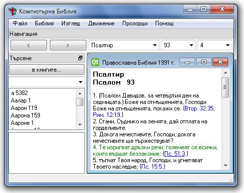

Програма за четене и изучаване на Библията
Официален сайт readthebible.sourceforge.net
Обща Информация
Изтегляне
Екип
Помогнете
За програмисти
Версии
Пощенски списъци
Главната цел на програмата Компютърна Библия - версия 5 е да допълва възможностите, които предлагат съществуващите безплатни програми за четене и изучаване на Библията:
Ако вече желаете да изтеглите и използвате програмата, преминете веднага към раздела Изтегляне.
Компютърна Библия - версия 5 е продължение на "Компютърна Библия - версия 4.3", но представлява напълно нова разработка, в която се използва само идеята и файловете с материали от предишните версии.
Компютърна Библия 5 е многоплатформена програма с отворен код (GPL), написана на C++ с Qt. Т.е. използва една качествена и мощна библиотека за разработване на многоплатформен софтуер, с която са реализирани и други библейски програми (например: CrossBgBible, Българска Linux Библия, BibleTime).
Публикуваните до момента версии са до висока степен стабилни и надеждно функциониращи, въпреки че, предстои още работа по добавяне на всички функции, каквито има в Компютърна Библия - версия 4.3. Успоредно с това и дори с приоритет се създават и принципно нови, които се очаква да направят новата програма още по-удобна, например: възможност самата програма да тегли от Интернет и да инсталира необходимите преводи на Библията, възможност самата програма да проверява, тегли и инсталира следващите свои версии и др.
Докато бъдат реализирани всички функции от старата версия 4.3 и във версия 5, поне в Windows XP, може да се ползват съвместно двете версии. За целта в менюто на версия 5 е добавена команда ("Прозорци" - "Версия 4.3") за отваряне на версия 4.3, а ако тя не е инсталирана, версия 5 може да изтегли от Интернет и да инсталира автоматично версия 4.3. Така до голяма степен отпада необходимостта от сложния досегашен начин за инсталиране на версия 4.3, модул по модул. Версия 4.3 използва библиите изтеглени с помощта на версия 5. Останалите модули на версия 4.3 - речниците и илюстрациите, които още не са добавени и във версия 5 все още се налага да бъдат теглени и инсталирани ръчно от страницата за теглене на модули.
Екипът, който работи по програмата е отворен и всеки, който желае може да участва с доброволен труд за постигане на поставената цел - създаване на една удобна, многоплатформена, уникална с възможностите си програма за запознаване с Библията, както и за задълбочено изучаване, изследване, цитиране и показване на Библията.
Към момента в работата по програмата са участвали (по азбучен ред):
Ваньо Георгиев - автор на Компютърна Библия - версия 3.4, програмист, администратор на сайта vanyog.com;
Деян Павлов - превеждане на текстове от сайта на английски.
Мите Гошев - превеждане на интерфейса на македонски
Петър Червенков - набиране на текст;
Теодор Бахчеванов - графичен дизайн, създател на логото и иконата;
Ако имате желание и вие да се включите, вижте раздела "Помогнете".
Всеки, който желае да види тази програма да се развива по-бързо, би могъл да помогне.
Не е задължително да сте софтуерен специалист, важно е само да имате желание да подкрепите създаването на един добър продукт, полезен за Вас и всички останали. Дори само да съобщите за забелязана печатна грешка, например, е важна и полезна помощ.
Компютърна Библия - версия 5 е регистрирана в сайта за програми с отворен код sourceforge.net и най-добрият начин да окажете подкрепа е да използвате инструментите за колективна работа, които има там.
Може да започнете с това да се абонирате в пощенския списък Readthebible-general и да започнете да пишете в него. Страницата за абониране е на руски, защото софтуерът за пощенски списъци не е преведена на български, а руският език е единствения, поддържан от системата език с азбука Кирилица. Така с избора на руски език се дава възможност да се пишат писма на Кирилица. Повече за пощенските списъци, на настоящата програма вижте в “Пощенски списъци”.
За да използате други инструменти на sourceforge.net е необходимо да си направите профил. Тогава ще можете да:
И без да се регистрирате в sourceforge.net, може директно да се свържете с Ваньо Георгиев (vanyog.com) и да зададете въпросите, които ви интересуват.
За да се ускори реализирането на постъпилите предложения и нови идеи е важно към работния екип да се присъединят разработчици, които да помагат за:
Изтеглете файла Bible-v5.2.1-win.zip и го разархивирайте в отделна директория. Ако обновявате съществуваща версия на програмата, изкопирайте разархивираните файлове и директории в директорията със старата инсталация.
Щракнете двойно върху изпълнимия файл Bible.exe за да стартирате програмата.
Изтеглете файла Bible-v5.2.1-mac.zip.
Щракнете двойно върху него за да се разархивира, а после щракнете двойно върху създадената нова директория, за да я отворите.
Щракнете двойно върху изпълнимия пакет Bible.app за да стартирате програмата.
За Linux може да изтеглите изпълним файл за ubunu 13.10 bible5.1.1-ubuntu13.10.tar.gz. На тази дистрибуция файлът е изготвен и проверен. Ако този файл не работи на Вашата дистрибуция е необходимо програмата да се компилира от изходен код. Вижте следващия раздел "За програмисти".
За да компилирате Компютърна Библия - версия 5 от изходния код, трябва да разполагате с Qt 4 LGPL. "Компютърна Библия" не е адаптирана за весия 5 на Qt, така че на страницата за изтегляне на Qt http://qt-project.org/downloads трябва да слезете по-надолу, кадето са линковете за изтегляне на по-старата версия 4. За инсталиране на библиотеките за Windows, вижте тази записка: http://sourceforge.net/p/readthebible/wiki/bg-Qt-4.8-windows
Ако решите да разглеждате или променяте изходния код, може би ще е полезно да имате предвид:
Кодировката на файловете е UTF-8.
Предназначението на някои файлове е следното:
В директория update се намира първичния код на една малка допълнителна програма, която се стартира след изтегляне на нова версия от Интернет. Тази програма разархивира, изтегления zip файл и после отново стартира "Компютърна Библия - 5".
build.bat и build.sh - извършват компилирането (.bat файла в Windows, а .sh файла в Mac и Linux).
cpr.bat - създава нова директория rel и копира в нея изпълнимия и други файлове;
cps.bat - създава нова директория src и копира в нея файловете с изходния код;
cpm.sh и cps.sh - същото като cpr.bat и cps.bat, но за Mac;
mac.sh - подготвя за дистрибутиране изпълнимия пакет за Mac.
5.2.1 - 14 декември 2015 г.
5.2.0 - 12 декември 2015 г.
6.0 - 9 ноември 2015 г.
5.2.0 - 17 март 2015 г.
5.1.2 - 18 март 2014 г.
5.1.2 - 23 януари 2014 г.
5.1.1 - 22 януари 2014 г.
5.1.1 - 17 ноември 2013 г.
5.1.1 - 16 ноември 2013 г.
5.1.0 - 7 април 2012 г. (само за Mac)
5.0 алфа 20 - 30 март 2012 г.
5.0 алфа 20 - 7 март 2012 г. (обновена е само версията за Windows)
Промените, направени в по-стари версии, през минали години вижте в "История".
За предпочитане е всички въпроси и мнения за Компютърна Библия - да се изпращат на адреса на пощенския списък:
readthebible-general@lists.sourceforge.net.
Съобщенията, изпратени до този адрес, автоматично са запазват в Интернет и могат да се прочетат на страница:
http://sourceforge.net/mailarchive/forum.php?forum_name=readthebible-general.
Обща информация за пощенския списък има на адрес:
https://lists.sourceforge.net/lists/listinfo/readthebible-general.
Страницата от същия адрес дава възможност да добавите и своя имейл в пощенския списък, както и да промените своите данни или да се отпишете.
Може да изпратите имейл, който ще бъде получен от всички участници в пощенския списък, като го адресирате до:
readthebible-general@lists.sourceforge.net.
Може да получите инструкции по имейл как да промените своето участие в пощенския списък, ако изпратите съобщение до:
readthebible-general-request@lists.sourceforge.net
със съдържание или Subject думата help.
Трябва да помните своята парола, за да можете да направите промени!
За да получавате съобщение при всяко обновяване на някой файл във SVN хранилището може да се запишете в пощенския списък: readthebible-svn. Този списък е само за четене и не приема отговори на изпратените съобщения.